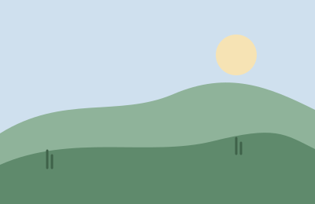
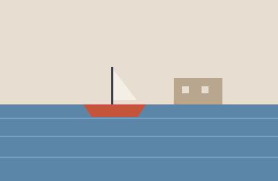
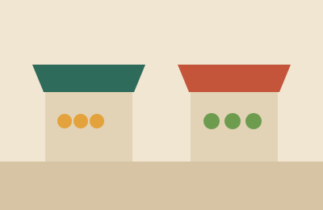
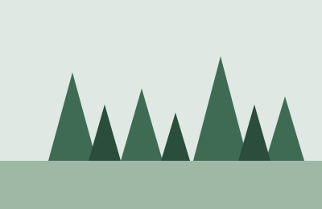

Scroll inside this frame. Each picture loads as it arrives.
Field notes, week 42

Hills above the tea estate

Morning boat out of the harbour

Fruit stalls by the jetty
Dunes at the river mouth

Pines on the ridge trail
The town at dusk
End of the week.